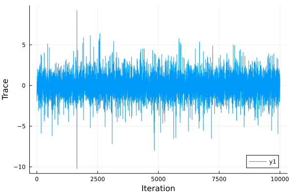

General Usage
This package implements the AbstractMCMC interface. AbstractMCMC provides a unifying interface for MCMC algorithms applied to LogDensityProblems.
Examples
Drawing Samples From a LogDensityProblems Through AbstractMCMC
SliceSampling.jl implements the AbstractMCMC interface through LogDensityProblems. That is, one simply needs to define a LogDensityProblems and pass it to AbstractMCMC:
using AbstractMCMC
using Distributions
using LinearAlgebra
using LogDensityProblems
using Plots
using SliceSampling
struct Target{D}
dist::D
end
LogDensityProblems.logdensity(target::Target, x) = logpdf(target.dist, x)
LogDensityProblems.dimension(target::Target) = length(target.distx)
LogDensityProblems.capabilities(::Type{<:Target}) = LogDensityProblems.LogDensityOrder{0}()
sampler = GibbsPolarSlice(2.0)
n_samples = 10000
model = Target(MvTDist(5, zeros(10), Matrix(I, 10, 10)))
logdensitymodel = AbstractMCMC.LogDensityModel(model)
chain = sample(logdensitymodel, sampler, n_samples; initial_params=randn(10))
samples = hcat([transition.params for transition in chain]...)
plot(samples[1,:], xlabel="Iteration", ylabel="Trace")
savefig("abstractmcmc_demo.svg")"/home/runner/work/SliceSampling.jl/SliceSampling.jl/docs/build/abstractmcmc_demo.svg"
Drawing Samples From Turing Models
SliceSampling.jl can also be used to sample from Turing models through Turing's externalsampler interface:
using Distributions
using Turing
using SliceSampling
@model function demo()
s ~ InverseGamma(3, 3)
m ~ Normal(0, sqrt(s))
end
sampler = RandPermGibbs(SliceSteppingOut(2.))
n_samples = 10000
model = demo()
sample(model, externalsampler(sampler), n_samples)Chains MCMC chain (10000×3×1 Array{Float64, 3}):
Iterations = 1:1:10000
Number of chains = 1
Samples per chain = 10000
Wall duration = 5.34 seconds
Compute duration = 5.34 seconds
parameters = s, m
internals = lp
Summary Statistics
parameters mean std mcse ess_bulk ess_tail rhat ⋯
Symbol Float64 Float64 Float64 Float64 Float64 Float64 ⋯
s 1.4859 1.3479 0.0200 5871.8480 5276.3054 1.0000 ⋯
m 0.0184 1.2014 0.0125 9022.0599 6496.8594 1.0000 ⋯
1 column omitted
Quantiles
parameters 2.5% 25.0% 50.0% 75.0% 97.5%
Symbol Float64 Float64 Float64 Float64 Float64
s 0.4181 0.7643 1.1211 1.7322 4.6450
m -2.3187 -0.7132 0.0149 0.7294 2.4369
Conditional sampling in a Turing.Gibbs sampler
SliceSampling.jl be used as a conditional sampler in Turing.Gibbs.
using Distributions
using Turing
using SliceSampling
@model function simple_choice(xs)
p ~ Beta(2, 2)
z ~ Bernoulli(p)
for i in 1:length(xs)
if z == 1
xs[i] ~ Normal(0, 1)
else
xs[i] ~ Normal(2, 1)
end
end
end
sampler = Turing.Gibbs(
:p => externalsampler(SliceSteppingOut(2.0)),
:z => PG(20),
)
n_samples = 1000
model = simple_choice([1.5, 2.0, 0.3])
sample(model, sampler, n_samples)Chains MCMC chain (1000×3×1 Array{Float64, 3}):
Iterations = 1:1:1000
Number of chains = 1
Samples per chain = 1000
Wall duration = 24.9 seconds
Compute duration = 24.9 seconds
parameters = p, z
internals = lp
Summary Statistics
parameters mean std mcse ess_bulk ess_tail rhat e ⋯
Symbol Float64 Float64 Float64 Float64 Float64 Float64 ⋯
p 0.4384 0.2211 0.0087 675.7336 499.1966 1.0130 ⋯
z 0.1640 0.3705 0.0167 490.5376 NaN 1.0107 ⋯
1 column omitted
Quantiles
parameters 2.5% 25.0% 50.0% 75.0% 97.5%
Symbol Float64 Float64 Float64 Float64 Float64
p 0.0584 0.2698 0.4249 0.6005 0.8682
z 0.0000 0.0000 0.0000 0.0000 1.0000
Drawing Samples
For drawing samples using the algorithms provided by SliceSampling, the user only needs to call:
sample([rng,] model, slice, N; initial_params)slice::AbstractSliceSampling: Any slice sampling algorithm provided bySliceSampling.model: A model implementing theLogDensityProblemsinterface.N: The number of samples
The output is a SliceSampling.Transition object, which contains the following:
SliceSampling.Transition — Typestruct TransitionStruct containing the results of the transition.
Fields
params: Samples generated by the transition.lp::Real: Log-target density of the samples.info::NamedTuple: Named tuple containing information about the transition.
For the keyword arguments, SliceSampling allows:
initial_params: The intial state of the Markov chain (default:nothing).
If initial_params is nothing, the following function can be implemented to provide an initialization:
SliceSampling.initial_sample — Functioninitial_sample(rng, model)Return the initial sample for the model using the random number generator rng.
Arguments
rng::Random.AbstractRNG: Random number generator.model: The targetLogDensityProblem.
Performing a Single Transition
For more fined-grained control, the user can call AbstractMCMC.step. That is, the chain can be initialized by calling:
transition, state = AbstractMCMC.steps([rng,] model, slice; initial_params)and then each MCMC transition on state can be performed by calling:
transition, state = AbstractMCMC.steps([rng,] model, slice, state)For more details, refer to the documentation of AbstractMCMC.